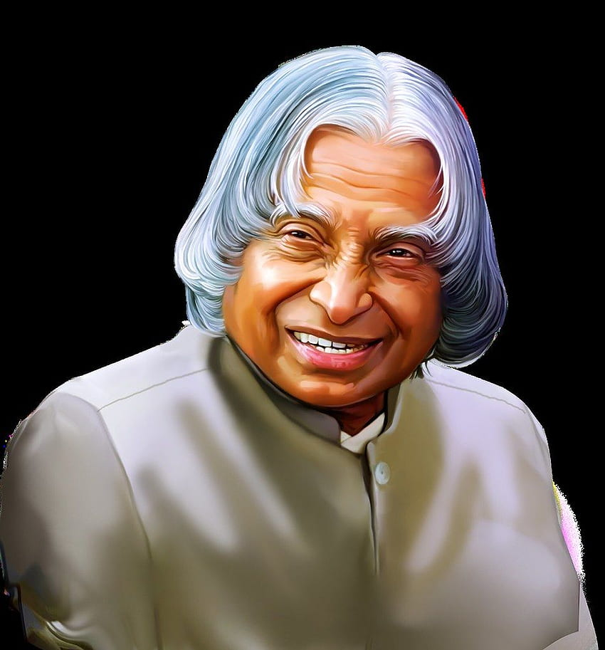

A. P. J. Abdul Kalam

Great Indian scientist and politician who played a leading role in the development of India’s missile and nuclear weapons programs.
Great Indian scientist and politician who played a leading role in the development of India’s missile and nuclear weapons programs.
About the Legend
- A.P.J. Abdul Kalam, in full Avul Pakir Jainulabdeen Abdul Kalam, was born on October15,1931, in Rameswaram, Tamil Nadu, India.
- He served as the 11th President of India from 2002 to 2007.
- Kalam earned a degree in aeronautical engineering from the Madras Institute of Technology and in 1958 joined the Defence Research and Development Organisation (DRDO).
- In 1969, he moved to the Indian Space Research Organisation, where he was project director of the SLV-III, the first satellite launch vehicle that was both designed and produced in India.
- Rejoining DRDO in 1982, Kalam planned the program that produced a number of successful missiles, which helped earn him the nickname “Missile Man.”
- Among those successes was Agni, India’s first intermediate-range ballistic missile, which incorporated aspects of the SLV-III and was launched in 1989.
- Among those successes was Agni, India’s first intermediate-range ballistic missile, which incorporated aspects of the SLV-III and was launched
- He also played a pivotal organisational, technical, and political role in India's Pokhran-II nuclear tests in 1998, the first since the original nuclear test by India in 1974.
- From 1992 to 1997 Kalam was scientific adviser to the defense minister, and he later served as principal scientific adviser (1999–2001) to the government with the rank of cabinet minister.
- His prominent role in the country’s 1998 nuclear weapons tests solidified India as a nuclear power and established Kalam as a national hero, although the tests caused great concern in the international community.
- In 1998 Kalam put forward a countrywide plan called Technology Vision 2020, which he described as a road map for transforming India from a less-developed to a developed society in 20 years. The plan called for, among other measures, increasing agricultural productivity, emphasizing technology as a vehicle for economic growth, and widening access to health care and education.
- Kalam received 7 honorary doctorates from 40 universities. The Government of India honoured him with the Padma Bhushan in 1981 and the Padma Vibhushan in 1990 for his work with ISRO and DRDO and his role as a scientific advisor to the Government.
- In 1997, Kalam received India's highest civilian honour, the Bharat Ratna, for his contribution to the scientific research and modernisation of defence technology in India.
- In 2013, he was the recipient of the Von Braun Award from the National Space Society "to recognize excellence in the management and leadership of a space-related project".
- While delivering a lecture at the Indian Institute of Management Shillong, Kalam collapsed and died from an apparent cardiac arrest on 27 July 2015, aged 83.
- Wheeler Island, a national missile test site in Odisha, was renamed Kalam Island in September 2015.
- A prominent road in New Delhi was renamed from Aurangzeb Road to Dr APJ Abdul Kalam Road in August 2015.
- In February 2018, scientists from the Botanical Survey of India named a newly found plant species as Drypetes kalamii, in his honour.
For more information, check out A.P.J. Abdul Kalam on Wikipedia.